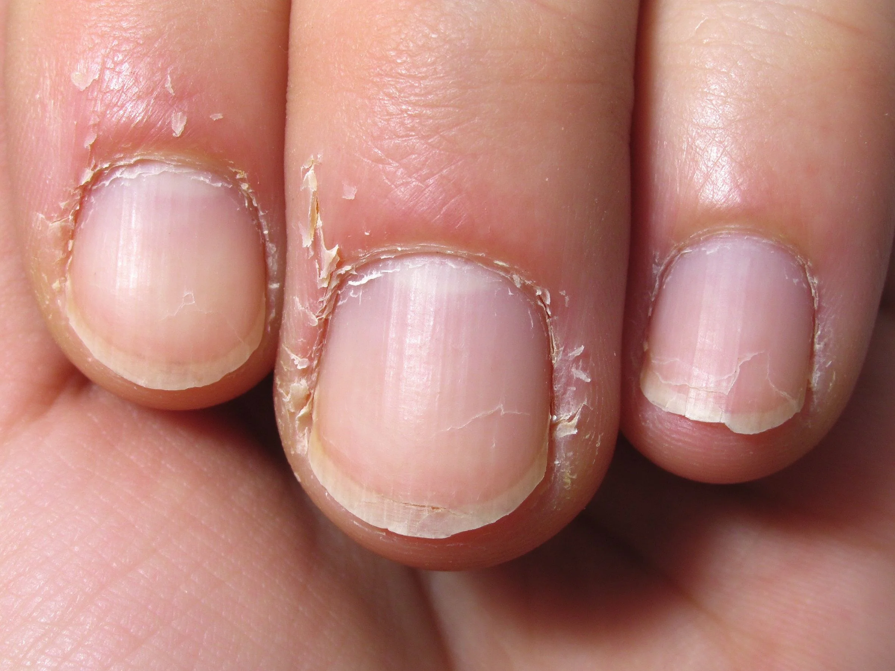

美甲指甲分層是什麼？中階入門攻略
指甲分層是甲面「一片一片翹起來」，多半不是你身體有問題，是乾燥＋前置磨太兇。
指甲分層原理與辨識重點：美甲師不說的多是乾燥或磨傷
甲面其實是一層一層角質疊起來的。當角質之間的水分不夠、或被過度打磨（一次磨太深、常拋光），層與層之間就會鬆開，看起來一片一片翹、指甲邊緣像紙一樣剝落。客人常以為是「身體不好」，其實九成是外在保養問題。
誰適合做指甲分層？分層煩惱對號入座
常做美甲、每次卸甲都被磨很厚的人最容易有；冬天、常洗碗或游泳的人，以及習慣用銼刀猛磨甲面的人也會加劇。
指甲分層美甲施作步驟：補水＋強化
先暫停 2–4 週不做美甲 → 不要用銼刀磨甲面（只修邊緣）→ 早晚擦指緣油、洗手後馬上補 → 一週塗 1–2 次含蛋白質或鈣的強化油 → 新長出來的指甲會慢慢變平滑。
指甲分層優缺點分析：美甲持久度與傷甲評估
| 優點 | 說明 |
|---|---|
| 分層改善後，甲面會回復平滑光澤，也比較能留長、做款式，不用一直靠凝膠遮醜。 | 是通用流派的招牌，中階就能上手 |
| 缺點 | 說明 |
| 修復期要忍住「想做美甲」的癮，至少 2–4 週不能貪心，也不能一看到翹皮就想撕。 | 前置與最常見的錯誤是「看到翹起來的就用撕的」，那會把下一層也一起扯下來，越撕越薄。要剪掉就用小剪刀平剪，不要用手剝。沒顧好會打折 |

指甲分層新手雷區：勤保養與常見錯誤
注意：最常見的錯誤是「看到翹起來的就用撕的」，那會把下一層也一起扯下來，越撕越薄。要剪掉就用小剪刀平剪，不要用手剝。
指甲分層和其他美甲做法的差別比較
分層跟脆甲不一樣：分層是「層次剝落」，脆甲是「整片乾裂」。分層最怕「磨」，脆甲最怕「水」，保養重點不同。
指甲分層美甲常見問題 FAQ
Q：分層會自己好嗎？ A：會。指甲每個月長 3 毫米，只要停止傷害、做好保養，2–3 個月新長出來的就會是健康的甲面。
Q：可以塗指甲油掩蓋嗎？ A：短暫可以，但指甲油有機溶劑會讓甲面更乾。修復期建議只擦指緣油和強化油，不要上色。
Q：會不會是黴菌？ A：單純分層通常不會變色、不會臭。如果甲面變黃、變灰、有屑狀物，才是甲癬，要找皮膚科。